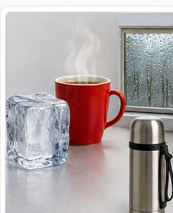

Temperatur und Wärme
Warum wird Kakao kalt und Eiswasser warm?
In welche Richtung wird Energie beim Temperaturausgleich übertragen?

1
Staunen
Entdecke das Phänomen
Leitfrage:
In welche Richtung wird Energie beim Temperaturausgleich übertragen?
In welche Richtung wird Energie beim Temperaturausgleich übertragen?
Sieh dir das Bild genau an. Nenne mindestens zwei Dinge, die du bereits kennst.
Gestufte Tipps
Tipps erscheinen hier.
Beobachte zuerst – erkläre erst danach.
2
Vermuten
Was erwartest du?
Was geschieht, wenn ein warmes und ein kaltes Gefäß lange nebeneinander stehen?
Gestufte Tipps
Tipps erscheinen hier.
Deine Vermutung darf zunächst auch falsch sein.
3
Untersuchen
Experiment sicher durchführen
Material
Warmes Wasserkaltes Wasserzwei ThermometerMischgefäßStoppuhr
Schritte abhaken
Gestufte Tipps
Tipps erscheinen hier.
Nutze nur die beschriebenen Materialien und beachte die Sicherheitsregeln.
4
Beobachten
Was hast du festgestellt?
Wo liegt die Endtemperatur meistens?
Gestufte Tipps
Tipps erscheinen hier.
Trenne deine Beobachtung von einer möglichen Erklärung.
5
Erklären
Wie lässt sich das erklären?
Was wird übertragen?
Gestufte Tipps
Tipps erscheinen hier.

Übertrage deine Beobachtung auf ein Modell oder ein Alltagsbeispiel.
6
Sichern
Dein Merksatz
Wähle den besten Merksatz.
Gestufte Tipps
Tipps erscheinen hier.
Wähle die fachlich passende Zusammenfassung.
🏅
Lernpfad abgeschlossen
Du hast vermutet, untersucht, beobachtet, erklärt und gesichert.
Zur Übersicht